library(tidyverse)## ── Attaching packages ─────────────────────────────────────── tidyverse 1.3.2 ──
## ✔ ggplot2 3.3.6 ✔ purrr 0.3.4
## ✔ tibble 3.1.8 ✔ dplyr 1.0.9
## ✔ tidyr 1.2.0 ✔ stringr 1.4.0
## ✔ readr 2.1.2 ✔ forcats 0.5.1
## ── Conflicts ────────────────────────────────────────── tidyverse_conflicts() ──
## ✖ dplyr::filter() masks stats::filter()
## ✖ dplyr::lag() masks stats::lag()library(ggplot2)
library(plotly)##
## Attaching package: 'plotly'
##
## The following object is masked from 'package:ggplot2':
##
## last_plot
##
## The following object is masked from 'package:stats':
##
## filter
##
## The following object is masked from 'package:graphics':
##
## layout#new dataset, this is mainly just sorting all the data into two categories that best fit
cars <- read.csv('usedcars_dataset.csv')#splitting dataset by less than four or greater than four because four cylinders are the most common engine
cars["num.of.cylinders"][cars["num.of.cylinders"] == 'three'] <- '<= four'
cars["num.of.cylinders"][cars["num.of.cylinders"] == 'two'] <- '<= four'
cars["num.of.cylinders"][cars["num.of.cylinders"] == 'four'] <- '<= four'
cars["num.of.cylinders"][cars["num.of.cylinders"] == 'five'] <- '>= five'
cars["num.of.cylinders"][cars["num.of.cylinders"] == 'six'] <- '>= five'
cars["num.of.cylinders"][cars["num.of.cylinders"] == 'eight'] <- '>= five'#changed 4wd to fwd because it was a similar price
cars["drive.wheels"][cars["drive.wheels"] == '4wd'] <- 'fwd'#these were also made by price sedan and wagon are together because those are consumer cars while hardtop convertible and hatchbacks are sportier
cars["body.style"][cars["body.style"] == "hardtop"] <- "hatchback"
cars["body.style"][cars["body.style"] == "convertible"] <- "hatchback"
cars["body.style"][cars["body.style"] == "7"] <- "hatchback"
cars["body.style"][cars["body.style"] == "wagon"] <- "sedan"#I made all the ohcs ohc because theyre basically the same thing. I made the l engine dohc because they were similar price
cars["engine.type"][cars["engine.type"] == "l"] <- "dohc"
cars["engine.type"][cars["engine.type"] == "ohcf"] <- "ohc"
cars["engine.type"][cars["engine.type"] == "ohcv"] <- "ohc"
cars["engine.type"][cars["engine.type"] == "rotor"] <- "dohc"#NA didn’t like me so I just made NA t
cars[cars == ""] <- 't'cars['num.of.doors'][cars['num.of.doors'] == 't' ] <- "two"#making median and high the same category because there were so little of them
cars['price_binned'][cars['price_binned'] == 'Median'] <- 'Mid->High'
cars['price_binned'][cars['price_binned'] == 'High'] <- 'Mid->High'#making the binary more like decision tress
cars['diesel'][cars['diesel'] == '1'] <- 'Yes'
cars['diesel'][cars['diesel'] == '0'] <- 'No'
cars['gas'][cars['gas'] == '1'] <- 'Yes'
cars['gas'][cars['gas'] == '0'] <- 'No'#All my graphs to figure out my data parse
ggplot(cars, aes(x=make)) +
geom_bar() +
geom_text(stat='count', aes(label=..count..), vjust=-1) +
theme(axis.text.x = element_text(angle = 90))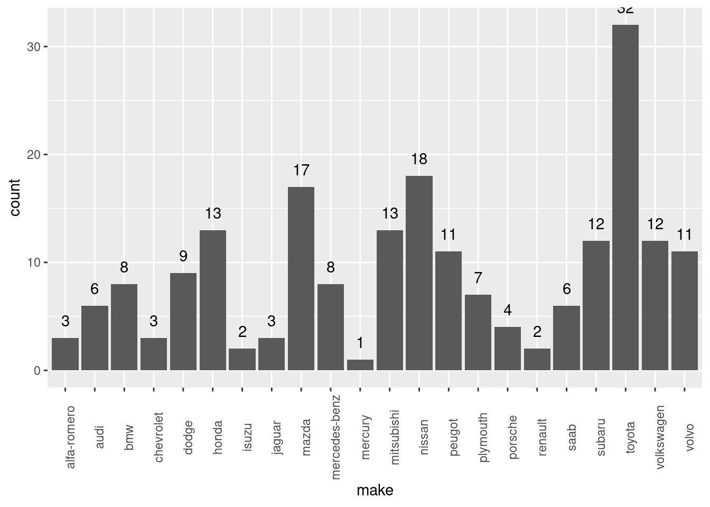
ggplot(cars, aes(x=drive.wheels)) +
geom_bar() +
geom_text(stat='count', aes(label=..count..), vjust=-1) +
theme(axis.text.x = element_text(angle = 90))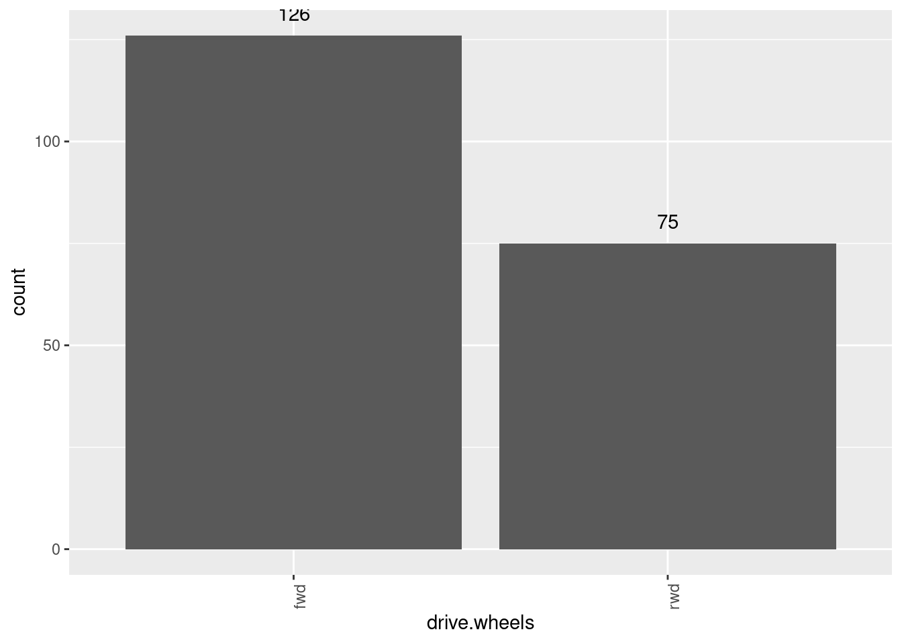
ggplot(cars, aes(x=engine.location)) +
geom_bar() +
geom_text(stat='count', aes(label=..count..), vjust=-1) +
theme(axis.text.x = element_text(angle = 90))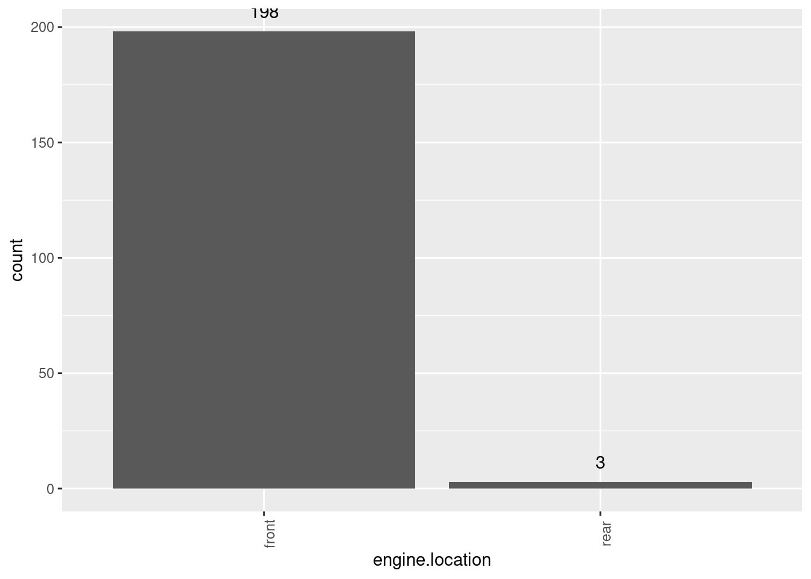
ggplot(cars, aes(x=num.of.cylinders)) +
geom_bar() +
geom_text(stat='count', aes(label=..count..), vjust=-1) +
theme(axis.text.x = element_text(angle = 90))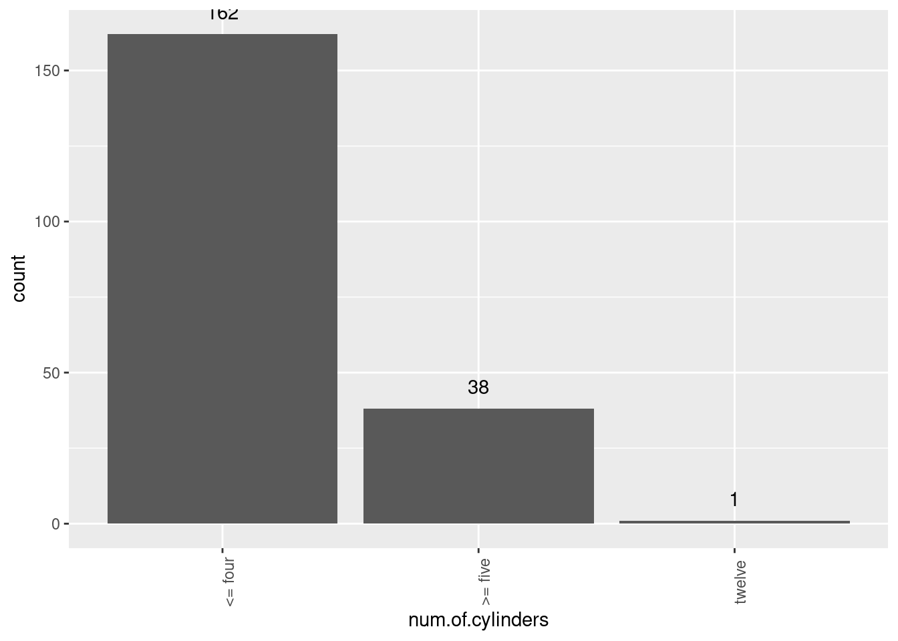
ggplot(cars, aes(x=engine.type)) +
geom_bar() +
geom_text(stat='count', aes(label=..count..), vjust=-1) +
theme(axis.text.x = element_text(angle = 90))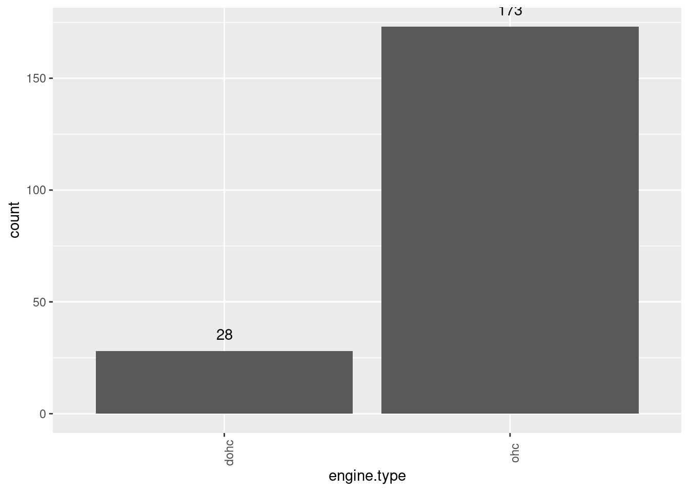
ggplot(cars, aes(x=aspiration)) +
geom_bar() +
geom_text(stat='count', aes(label=..count..), vjust=-1) +
theme(axis.text.x = element_text(angle = 90))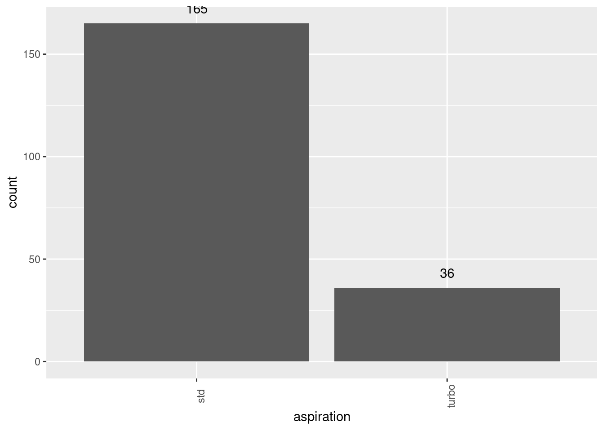
ggplot(cars, aes(x=num.of.doors)) +
geom_bar() +
geom_text(stat='count', aes(label=..count..), vjust=-1) +
theme(axis.text.x = element_text(angle = 90))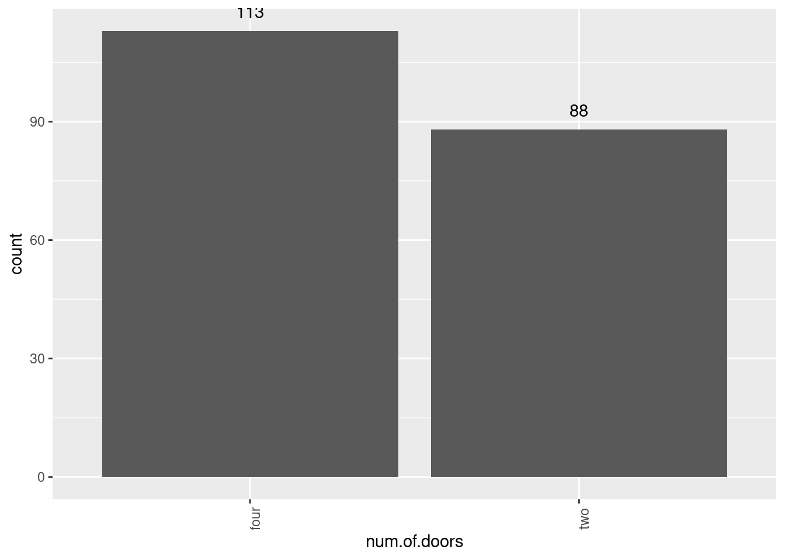
ggplot(cars, aes(x=body.style)) +
geom_bar() +
geom_text(stat='count', aes(label=..count..), vjust=-1) +
theme(axis.text.x = element_text(angle = 90))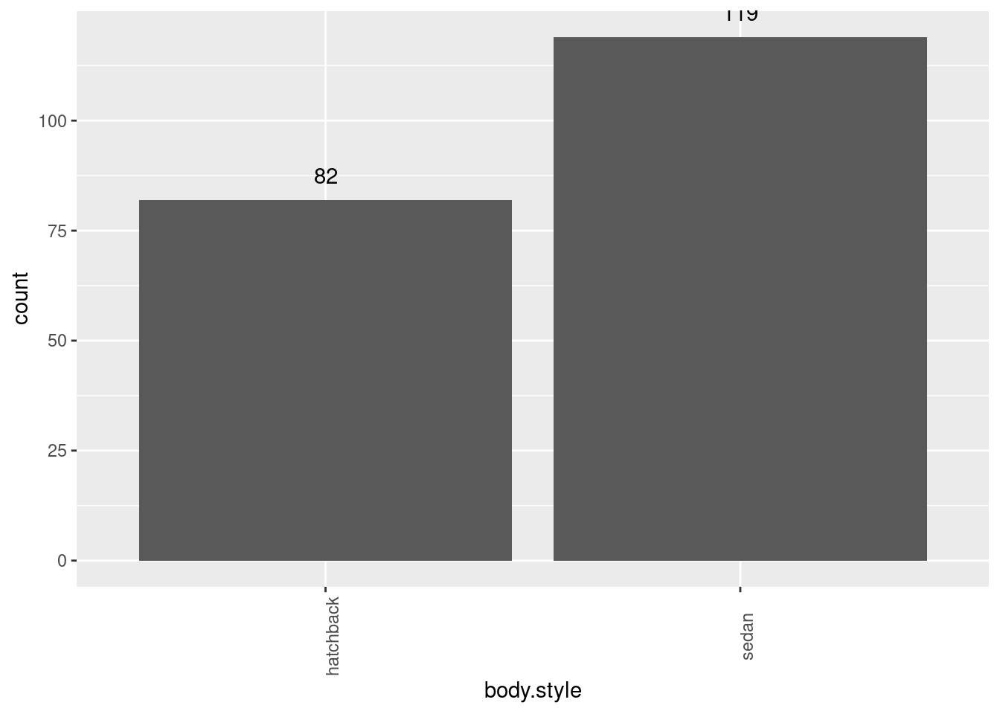
ggplot(cars, aes(x=fuel.system)) +
geom_bar() +
geom_text(stat='count', aes(label=..count..), vjust=-1) +
theme(axis.text.x = element_text(angle = 90))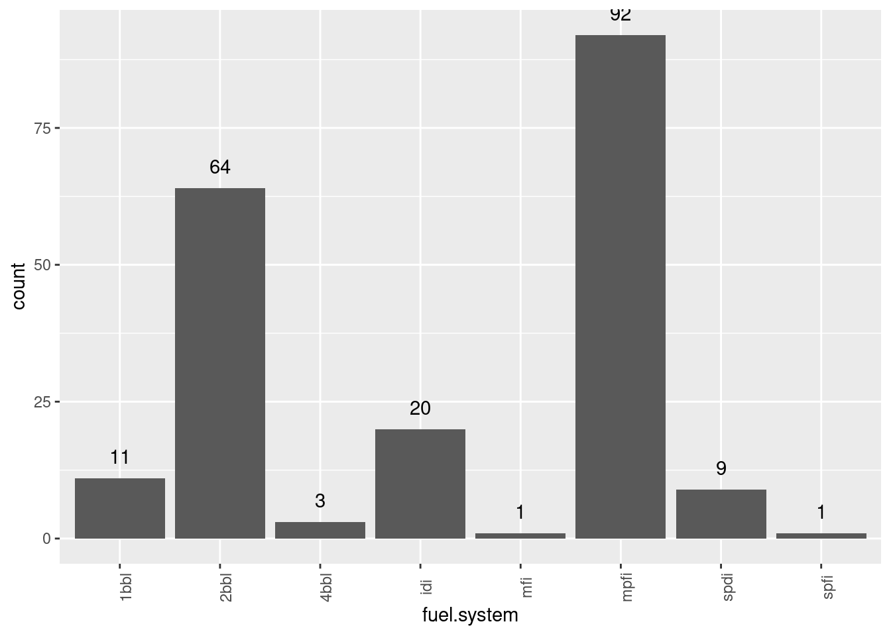
ggplot(cars, aes(x=price_binned)) +
geom_bar() +
geom_text(stat='count', aes(label=..count..), vjust=-1) +
theme(axis.text.x = element_text(angle = 90))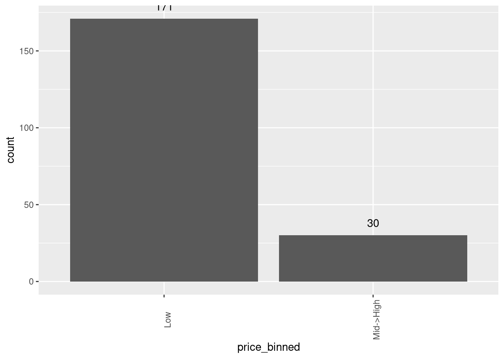
ggplot(cars, aes(x=body.style)) +
geom_bar() +
geom_text(stat='count', aes(label=..count..), vjust=-1) +
theme(axis.text.x = element_text(angle = 90))ggplot(cars, aes(x=engine.type)) +
geom_bar() +
geom_text(stat='count', aes(label=..count..), vjust=-1) +
theme(axis.text.x = element_text(angle = 90))cars['body.style'] <- replace(cars['body.style'], 'hardtop','hatchback')## Warning in `[<-.data.frame`(`*tmp*`, "body.style", value = structure(list(:
## provided 2 variables to replace 1 variablesggplot(cars, aes(x = factor(drive.wheels), y = price)) +
geom_bar(stat = "summary", fun = "mean")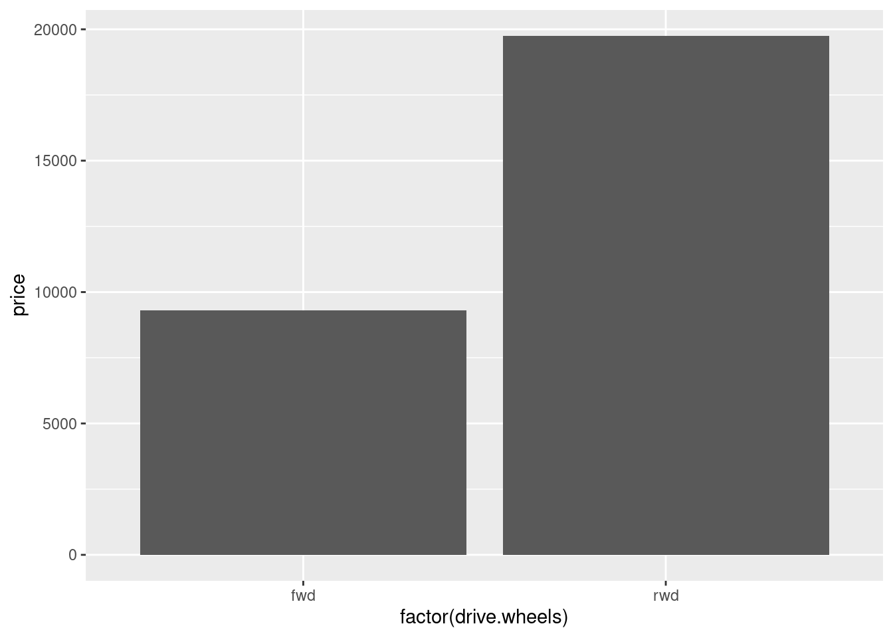
ggplot(cars, aes(x = factor(price_binned), y = price)) +
geom_bar(stat = "summary", fun = "mean")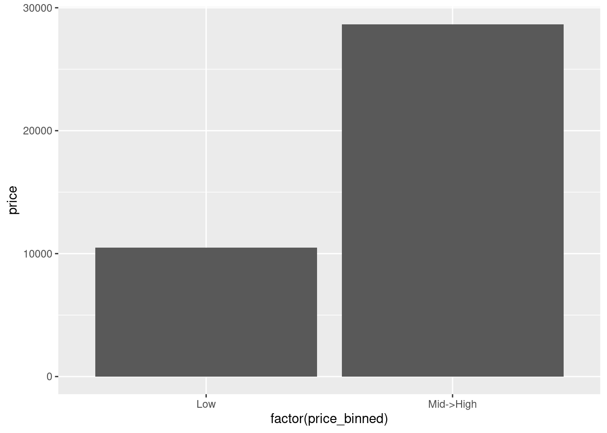
ggplot(cars, aes(x=price_binned)) +
geom_bar() +
geom_text(stat='count', aes(label=..count..), vjust=-1) +
theme(axis.text.x = element_text(angle = 90))write.csv(cars, 'used_car_binary.csv')data <- subset(cars, select= c(price,price_binned)) data